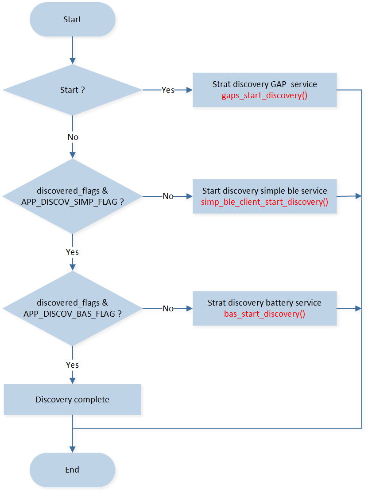
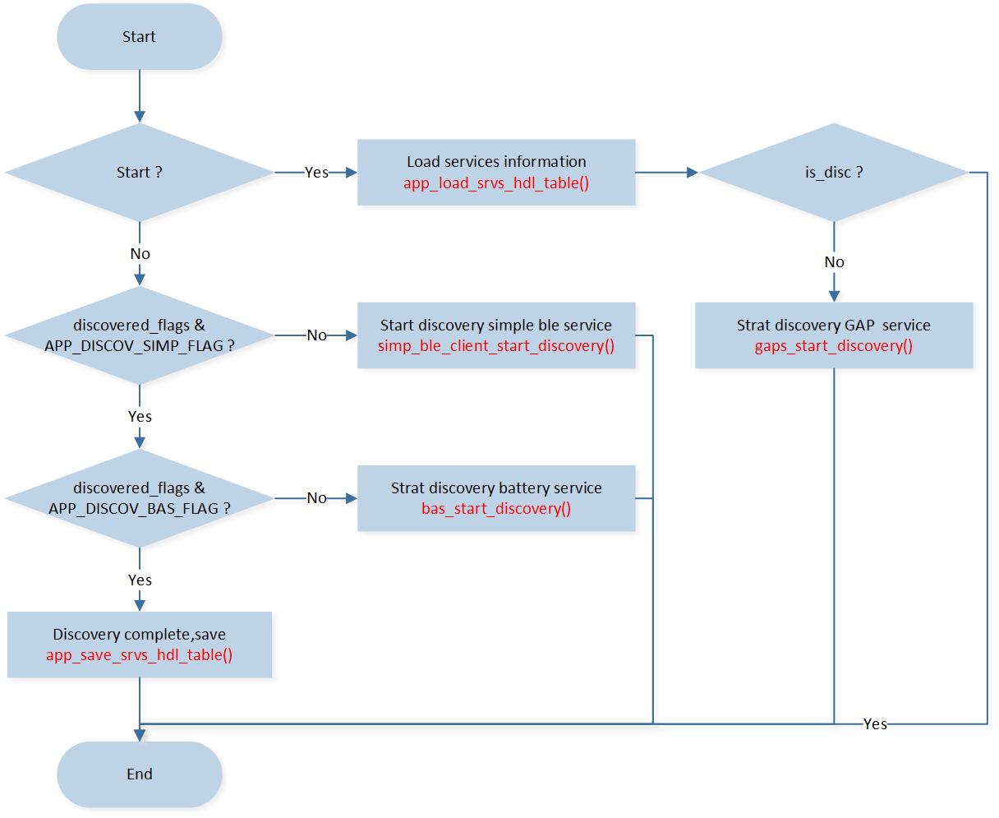

LE Central
The ble_central sample demonstrates how to use the LE GAP Central role to develop many different central-role-based applications.
LE Central role features:
Scan for advertising events.
Initiate connection and become a Central role in the link.
Connect with more than one peripheral device.
Requirements
The sample supports the following development kits:
Hardware Platforms |
Board Name |
|---|---|
RTL87x2G HDK |
RTL87x2G EVB |
To quickly set up the development environment, please refer to the detailed instructions provided in Quick Start.
Wiring
Please refer to EVB Interfaces and Modules in Quick Start.
The sample requires support for a user command interface. For specific wiring instructions, please refer to Data UART Connection in User Command Interface.
Configurations
Configurable Items
All contents that can be configured for the sample are in
samples\bluetooth\ble_central\src\app_flags.h,
Developers can configure according to actual needs.
/** @brief Config APP LE link number */
#define APP_MAX_LINKS 2
/** @brief Config GATT services storage: 0-Not save, 1-Save to flash
*
* If configure to 1, the GATT services discovery results will save to the flash.
*/
#define F_BT_GATT_SRV_HANDLE_STORAGE 0
Developers can open or close the GATT Service Handle Storage Module through the macro F_BT_GATT_SRV_HANDLE_STORAGE. For more information, please refer to GATT Services Handle Storage in Code Overview.
Generating System Config File
Developers shall configure the following items through MP Tool:
Configurable Item |
Value |
|---|---|
LE Master Link Num |
≥ APP_MAX_LINKS |
For more information about MP Tool Configuration, please refer to Generating System Config File in Quick Start.
Building and Downloading
This sample can be found in the SDK folder:
Project file: samples\bluetooth\ble_central\proj\rtl87x2g\mdk
Project file: samples\bluetooth\ble_central\proj\rtl87x2g\gcc
To build and run the sample, follow the steps listed below:
Open project file.
To build the target, follow the steps listed in the Generating App Image in Quick Start.
After a successful compilation, the APP bin
app_MP_sdk_xxx.binwill be generated in the directorysamples\bluetooth\ble_central\proj\rtl87x2g\mdk\bin.To download the APP bin into the EVB, follow the steps listed in the MP Tool Download in Quick Start.
Press the reset button on the EVB and it will start running.
Experimental Verification
After downloading the sample bin to the EVB, developers can test it by using another kit that is running the ble_peripheral sample.
Testing with Another Kit
Prepare two development boards named DUT and Tester respectively, and use Debug Analyzer tool to Log Verification .
Preparation Phase
Use MP Tool to set DUT address to [00:11:22:33:44:85], and then build the ble_central sample, and download images into DUT. Developers can enter the user command in the serial port assistant tool on PC. Please refer to How to Use Commands in User Command Interface.
Use MP Tool to set Tester address to [00:11:22:33:44:80], and then build the ble_peripheral sample, and download images into Tester. For more information, please refer to Building and Downloading in LE Peripheral.
For details about how to change the Bluetooth Address, please refer to Generating System Config File in Quick Start.
Testing Phase
Press the reset button on Tester and Tester will start sending connectable undirected advertising events.
If the advertisement is successfully enabled, the following Debug Analyzer log will be printed. If developers do not see the following log, it means that the advertisement failed to start. Please check if the software and hardware environment is configured correctly.
[APP] !**GAP adv start
Press the reset button on DUT and developers can enter the user command in the serial port assistant tool on PC.
If the DUT successfully boots up and the serial port assistant tool configuration is successful, developers will see the following log. The serial port assistant tool will display the local address. If developers do not see the following log, please check if the software and hardware environment is configured correctly.
local bd addr: xx:xx:xx:xx:xx:xxOne link test flow is shown below:
Step
DUT User Command
Description
DUT Log
1
scan 0
Start scanning and viewing information on LE device nearby discovered.
Debug Analyzer shows:
[APP] !**GAP scan start
[APP] GAP_MSG_LE_SCAN_INFO: bd_addr 00::11::22::33::44::80, bdtype 0, adv_type 0x0, rssi -17, data_len 23
2
stopscan
Stop scanning.
Debug Analyzer shows:
[APP] !**GAP scan stop
3
showdev
Show scan device list, the device list is filtered by simple LE service UUID.
Serial port assistant tool shows:
Advertising and Scan response: filter uuid = 0xA00A dev list RemoteBd[0] = [00:11:22:33:44:80] type = 0
4
condev 0
Initiate connection.
Serial port assistant tool shows:
Connected success conn_id 0
5
showcon
Show connection information.
Serial port assistant tool shows:
ShowCon conn_id 0 state 0x00000002 role 1
RemoteBd = [00:11:22:33:44:80] type = 0
6
conupdreq 0 1
Initiate connection parameter update request.
Debug Analyzer shows:
[APP] !**app_handle_conn_param_update_evt update success:conn_id 0, conn_interval 0xa, conn_slave_latency 0x0, conn_supervision_timeout 0x3e8
7
sauth 0
Send authentication request.
Serial port assistant tool shows:
Pair success
8
basread 0 0
Read the battery level value.
Debug Analyzer shows:
[APP] !**BAS_READ_BATTERY_LEVEL: battery level 90
9
gapread 0 0
Read the value of device name.
Debug Analyzer shows:
[APP] !**GAPS_READ_DEVICE_NAME: device name BLE_PERIPHERAL.
10
disc 0
Disconnect with the peripheral device.
Serial port assistant tool shows:
Disconnect conn_id 0
Code Overview
The main purpose of this chapter is to help developers become familiar with the development process related to Central Role. This chapter will be introduced according to the following several parts:
The directories of the project and source code files will be introduced in chapter Source Code Directory.
The Bluetooth Host will be introduced in chapter Bluetooth Host Overview.
The main function and configurable GAP parameters of this sample will be introduced in chapter Initialization.
The link control block will be introduced in chapter Multilink Manager.
The GAP message handler of this sample will be introduced in chapter GAP Message Handler.
The profile message callback of this sample will be introduced in chapter Profile Message Callback.
The procedure of discover GATT services will be introduced in chapter Discover GATT Services Procedure.
The GATT services handle storage will be introduced in chapter GATT Services Handle Storage.
Source Code Directory
Project directory:
samples\bluetooth\ble_central\proj.Source code directory:
samples\bluetooth\ble_central\src.
Source files in the ble_central sample project are currently categorized into several groups as below.
└── Project: central
└── secure_only_app
└── Device includes startup code
├── CMSE Library Non-secure callable lib
├── Lib includes all binary symbol files that user application is built on
├── ROM_NS.lib
└── lowerstack.lib
└── rtl87x2g_sdk.lib
└── gap_utils.lib
├── peripheral includes all peripheral drivers and module code used by the application
├── Profile includes LE profiles or services used by the sample application
└── APP includes the ble_central user application implementation
├── app_task.c
├── main.c
├── central_app.c
├── data_uart.c
├── link_mgr.c
├── user_cmd.c
└── user_cmd_parse.c
The sample uses the default GAP LIB that matches with bt_host_0_0, please refer to Usage of GAP LIB in
Host Image
for more information.
Bluetooth Host Overview
The sample uses the default Bluetooth Host image in bt_host_0_0, please refer to
Host Image
for more information.
For the details of Bluetooth technology features supported by the Bluetooth Host, please refer to the file
bin\rtl87x2g\bt_host_image\bt_host_0_0\bt_host_config.h.
Initialization
main() function is invoked when the EVB is powered on and the chip is reset,
and it performs the following initialization functions:
int main(void)
{
board_init();
le_gap_init(APP_MAX_LINKS);
gap_lib_init();
app_le_gap_init();
app_le_profile_init();
pwr_mgr_init();
task_init();
os_sched_start();
return 0;
}
le_gap_init()function is used to initialize GAP and configure link number.app_le_profile_init()function is used to initialize Profile.app_le_gap_init()function is used to initialize the GAP parameters, developers can configure the following parameters: Device name and device appearance, Scan parameters, GAP Bond Manager parameters (Please refer to the chapter Configure Device Name and Device Appearance, Configure Scan Parameters, Configure Bond Manager Parameters of LE Host).
void app_le_gap_init(void)
{
/* Device name and device appearance */
......
/* Scan parameters */
......
/* GAP Bond Manager parameters */
......
/* Set device name and device appearance */
le_set_gap_param(GAP_PARAM_DEVICE_NAME, GAP_DEVICE_NAME_LEN, device_name);
le_set_gap_param(GAP_PARAM_APPEARANCE, sizeof(appearance), &appearance);
/* Set scan parameters */
le_scan_set_param(GAP_PARAM_SCAN_MODE, sizeof(scan_mode), &scan_mode);
le_scan_set_param(GAP_PARAM_SCAN_INTERVAL, sizeof(scan_interval), &scan_interval);
le_scan_set_param(GAP_PARAM_SCAN_WINDOW, sizeof(scan_window), &scan_window);
le_scan_set_param(GAP_PARAM_SCAN_FILTER_POLICY, sizeof(scan_filter_policy),
&scan_filter_policy);
le_scan_set_param(GAP_PARAM_SCAN_FILTER_DUPLICATES, sizeof(scan_filter_duplicate),
&scan_filter_duplicate);
/* Setup the GAP Bond Manager */
gap_set_param(GAP_PARAM_BOND_PAIRING_MODE, sizeof(auth_pair_mode), &auth_pair_mode);
gap_set_param(GAP_PARAM_BOND_AUTHEN_REQUIREMENTS_FLAGS, sizeof(auth_flags), &auth_flags);
gap_set_param(GAP_PARAM_BOND_IO_CAPABILITIES, sizeof(auth_io_cap), &auth_io_cap);
gap_set_param(GAP_PARAM_BOND_OOB_ENABLED, sizeof(auth_oob), &auth_oob);
le_bond_set_param(GAP_PARAM_BOND_FIXED_PASSKEY, sizeof(auth_fix_passkey), &auth_fix_passkey);
le_bond_set_param(GAP_PARAM_BOND_FIXED_PASSKEY_ENABLE, sizeof(auth_use_fix_passkey),
&auth_use_fix_passkey);
le_bond_set_param(GAP_PARAM_BOND_SEC_REQ_REQUIREMENT, sizeof(auth_sec_req_flags),
&auth_sec_req_flags);
/* register gap message callback */
le_register_app_cb(app_gap_callback);
}
More information on LE GAP initialization and startup flow can be found in the chapter GAP Parameters Initialization of LE Host.
Multilink Manager
The sample link control block is defined in link_mgr.h.
typedef struct
{
T_GAP_CONN_STATE conn_state; /**< Connection state. */
uint8_t discovered_flags; /**< discovered flags. */
uint8_t srv_found_flags; /**< service founded flags. */
T_GAP_REMOTE_ADDR_TYPE bd_type; /**< remote BD type. */
uint8_t bd_addr[GAP_BD_ADDR_LEN]; /**< remote BD. */
} T_APP_LINK;
extern T_APP_LINK app_link_table[APP_MAX_LINKS];
app_link_table is used to save the connection link-related information.
GAP Message Handler
app_handle_gap_msg() function is invoked whenever a GAP message is received from the Bluetooth Host.
More information on GAP messages can be found in the chapter Bluetooth LE GAP Message of LE Host.
void app_handle_gap_msg(T_IO_MSG *p_gap_msg)
{
T_LE_GAP_MSG gap_msg;
uint8_t conn_id;
memcpy(&gap_msg, &p_gap_msg->u.param, sizeof(p_gap_msg->u.param));
APP_PRINT_TRACE1("app_handle_gap_msg: subtype %d", p_gap_msg->subtype);
switch (p_gap_msg->subtype)
{
case GAP_MSG_LE_DEV_STATE_CHANGE:
{
app_handle_dev_state_evt(gap_msg.msg_data.gap_dev_state_change.new_state,
gap_msg.msg_data.gap_dev_state_change.cause);
}
break;
......
default:
APP_PRINT_ERROR1("app_handle_gap_msg: unknown subtype %d", p_gap_msg->subtype);
break;
}
}
When a GAP_MSG_LE_CONN_STATE_CHANGE message is received, app_handle_conn_state_evt() will update the information in app_link_table.
void app_handle_conn_state_evt(uint8_t conn_id, T_GAP_CONN_STATE new_state, uint16_t disc_cause)
{
if (conn_id >= APP_MAX_LINKS)
{
return;
}
APP_PRINT_INFO4("app_handle_conn_state_evt: conn_id %d, conn_state(%d -> %d), disc_cause 0x%x",
conn_id, app_link_table[conn_id].conn_state, new_state, disc_cause);
app_link_table[conn_id].conn_state = new_state;
switch (new_state)
{
case GAP_CONN_STATE_DISCONNECTED:
{
if ((disc_cause != (HCI_ERR | HCI_ERR_REMOTE_USER_TERMINATE))
&& (disc_cause != (HCI_ERR | HCI_ERR_LOCAL_HOST_TERMINATE)))
{
APP_PRINT_ERROR2("app_handle_conn_state_evt: connection lost, conn_id %d, cause 0x%x", conn_id,
disc_cause);
}
data_uart_print("Disconnect conn_id %d\r\n", conn_id);
memset(&app_link_table[conn_id], 0, sizeof(T_APP_LINK));
}
break;
case GAP_CONN_STATE_CONNECTED:
{
le_get_conn_addr(conn_id, app_link_table[conn_id].bd_addr,
&app_link_table[conn_id].bd_type);
data_uart_print("Connected success conn_id %d\r\n", conn_id);
}
break;
default:
break;
}
}
Profile Message Callback
When APP uses xxx_add_client to register a specific client, APP shall register the callback function to handle the message from the specific client.
APP can register different callback functions to handle messages from different clients or register a general callback function to handle all the messages from specific clients.
app_client_callback() function is the general callback function. app_client_callback() can distinguish different clients by client ID .
More information can be found in the chapter GATT Profile Client of LE Host.
void app_le_profile_init(void)
{
client_init(3);
gaps_client_id = gaps_add_client(app_client_callback, APP_MAX_LINKS);
simple_ble_client_id = simp_ble_add_client(app_client_callback, APP_MAX_LINKS);
bas_client_id = bas_add_client(app_client_callback, APP_MAX_LINKS);
}
- GAP Service Client
gaps_client_idis the client ID of GAP Service Client.T_APP_RESULT app_client_callback(T_CLIENT_ID client_id, uint8_t conn_id, void *p_data) { T_APP_RESULT result = APP_RESULT_SUCCESS; APP_PRINT_INFO2("app_client_callback: client_id %d, conn_id %d", client_id, conn_id); if (client_id == gaps_client_id) { T_GAPS_CLIENT_CB_DATA *p_gaps_cb_data = (T_GAPS_CLIENT_CB_DATA *)p_data; switch (p_gaps_cb_data->cb_type) { case GAPS_CLIENT_CB_TYPE_DISC_STATE: ...... } } }
- Battery Service Client
bas_client_idis the client ID of battery service client.T_APP_RESULT app_client_callback(T_CLIENT_ID client_id, uint8_t conn_id, void *p_data) { T_APP_RESULT result = APP_RESULT_SUCCESS; APP_PRINT_INFO2("app_client_callback: client_id %d, conn_id %d", client_id, conn_id); if (client_id == bas_client_id) { T_BAS_CLIENT_CB_DATA *p_bas_cb_data = (T_BAS_CLIENT_CB_DATA *)p_data; switch (p_bas_cb_data->cb_type) { case BAS_CLIENT_CB_TYPE_DISC_STATE: ...... } } }
- Simple LE Service Client
simple_ble_client_idis the client ID of simple LE service client.T_APP_RESULT app_client_callback(T_CLIENT_ID client_id, uint8_t conn_id, void *p_data) { T_APP_RESULT result = APP_RESULT_SUCCESS; APP_PRINT_INFO2("app_client_callback: client_id %d, conn_id %d", client_id, conn_id); else if (client_id == simple_ble_client_id) { T_SIMP_CLIENT_CB_DATA *p_simp_client_cb_data = (T_SIMP_CLIENT_CB_DATA *)p_data; uint16_t value_size; uint8_t *p_value; switch (p_simp_client_cb_data->cb_type) { case SIMP_CLIENT_CB_TYPE_DISC_STATE: ...... } } }
Discover GATT Services Procedure
The ble_central sample will automatically discover services after receiving the message GAP_MSG_LE_CONN_MTU_INFO. Discover GATT services procedure is defined in app_discov_services(). More information can be found in app_discov_services() in central_app.c.
void app_handle_conn_mtu_info_evt(uint8_t conn_id, uint16_t mtu_size)
{
APP_PRINT_INFO2("app_handle_conn_mtu_info_evt: conn_id %d, mtu_size %d", conn_id, mtu_size);
app_discov_services(conn_id, true);
}
app_discov_services() flow chart is shown as below:
{kind=link}

Discover Services Flow
The sample will call app_discov_services() when it receives DISC_GAPS_DONE, DISC_SIMP_DONE and DISC_BAS_DONE.
Reference code is shown as below:
T_APP_RESULT app_client_callback(T_CLIENT_ID client_id, uint8_t conn_id, void *p_data)
{
......
case DISC_GAPS_DONE:
app_link_table[conn_id].discovered_flags |= APP_DISCOV_GAPS_FLAG;
app_link_table[conn_id].srv_found_flags |= APP_DISCOV_GAPS_FLAG;
app_discov_services(conn_id, false);
/* Discovery Simple LE service procedure successfully done. */
APP_PRINT_INFO0("app_client_callback: discover gaps procedure done.");
break;
......
case DISC_SIMP_DONE:
/* Discovery Simple LE service procedure successfully done. */
app_link_table[conn_id].discovered_flags |= APP_DISCOV_SIMP_FLAG;
app_link_table[conn_id].srv_found_flags |= APP_DISCOV_SIMP_FLAG;
app_discov_services(conn_id, false);
APP_PRINT_INFO0("app_client_callback: discover simp procedure done.");
break;
......
case DISC_BAS_DONE:
/* Discovery BAS procedure successfully done. */
app_link_table[conn_id].discovered_flags |= APP_DISCOV_BAS_FLAG;
app_link_table[conn_id].srv_found_flags |= APP_DISCOV_BAS_FLAG;
app_discov_services(conn_id, false);
APP_PRINT_INFO0("app_client_callback: discover bas procedure done");
break;
......
}
GATT Services Handle Storage
Reference code is shown as below:
typedef struct
{
uint8_t srv_found_flags;
uint8_t bd_type; /**< remote BD type*/
uint8_t bd_addr[GAP_BD_ADDR_LEN]; /**< remote BD */
uint32_t reserved;
uint16_t gaps_hdl_cache[HDL_GAPS_CACHE_LEN];
uint16_t simp_hdl_cache[HDL_SIMBLE_CACHE_LEN];
uint16_t bas_hdl_cache[HDL_BAS_CACHE_LEN];
} T_APP_SRVS_HDL_TABLE;
#if F_BT_GATT_SRV_HANDLE_STORAGE
uint32_t app_save_srvs_hdl_table(T_APP_SRVS_HDL_TABLE *p_info);
uint32_t app_load_srvs_hdl_table(T_APP_SRVS_HDL_TABLE *p_info);
#endif
app_save_srvs_hdl_table()is used to save the information to Flash.app_load_srvs_hdl_table()is used to load the information from Flash.app_discov_services()flow chart is shown as below:
{kind=link}

Discover Services Flow (F_BT_GATT_SRV_HANDLE_STORAGE)
See Also
Please refer to the relevant API Reference: